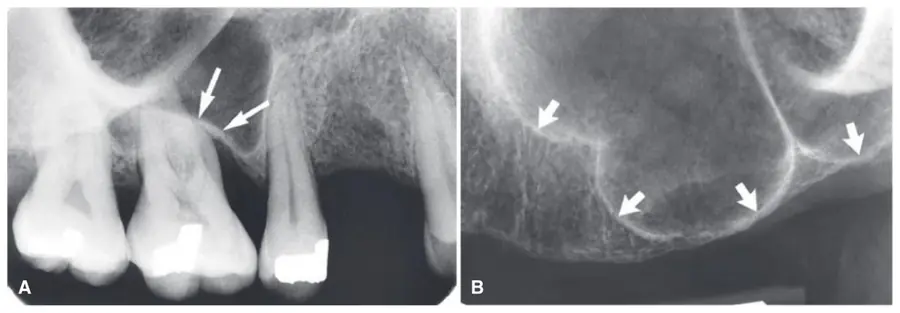
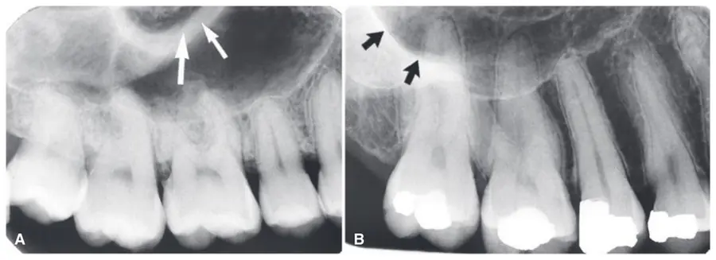

نسخه استخراجشده؛ ترجمه یا تأیید علمی انجام نشده است. وضعیت: captured
بیماری با درد مولرهای بالا میآید. هر سه دندان به تست حیات پاسخ میدهند و هیچ پوسیدگیای نیست. مقصر ممکن است اصلاً دندان نباشد.

سینوسهای پارانازال چهار جفتاند: ماگزیلاری، فرونتال، اسفنوئید و سلولهای هوایی اتموئید — پر از هوا، پوشیده از غشای موکوسی، و تخلیهشونده به حفرهی بینی از راه اوستیوم.
و یک محدودیت مهم: «تنها سینوسهای ماگزیلاری روی پریاپیکال دیده میشوند.» اسکن CBCT بسته به FOV سینوسها را به درجات مختلف در بر میگیرد: FOV محدود و متوسط در ماگزیلای خلفی بخشی از سینوس ماگزیلاری و اغلب سلولهای اتموئید را میگیرد؛ FOV کامل همهی سینوسهای پارانازال را.
سینوس ماگزیلاری، بزرگترین سینوس پارانازال، با فرورفتن غشای مخاطی از حفرهی بینی به درون ماگزیلا شکل میگیرد و تقریباً کل بدنهی آن را پر میکند. کارکردش ناشناخته است.
هندسهی سینوس ماگزیلاری — یک هرم سهوجهی: قاعدهاش دیوارهی داخلی مجاور حفرهی بینی، و رأسش به سمت جانب در زائدهی زایگوماتیک ماگزیلا. سه وجهش: ۱) دیوارهی فوقانی که کف اوربیت را میسازد، ۲) دیوارهی قدامی که بالای پرمولرها امتداد دارد، ۳) دیوارهی خلفی که بالای مولرها و توبروزیته برجسته میشود. اوستیوم «تقریباً ۳ تا ۶ میلیمتر قطر دارد و زیر بخش خلفی کونشای میانی اتموئید» قرار گرفته.
روی پریاپیکال: کف سینوس «یک لایهی نازک استخوان کورتیکال است و بهصورت یک خط نازک رادیواوپک دیده میشود». در بزرگسالان معمولاً از دیستال کانین تا دیوارهی خلفی ماگزیلا بالای توبروزیته امتداد دارد. در غیاب بیماری پیوسته به نظر میرسد، ولی با بررسی دقیق گسیختگیهای کوچکی در پیوستگی یا رادیودنسیتیاش دیده میشود که «احتمالاً توهماتی ناشی از سوپرایمپوزیشن فضاهای کوچک مغز استخوان» هستند.
اندازه و رشد: «سینوسها در کودکی بزرگ میشوند و در سن ۱۵ تا ۱۸ سالگی به اندازهی بالغ میرسند.» راست و چپ معمولاً شبیهاند، هرچند گاهی عدم تقارن چشمگیر وجود دارد. «کف سینوس ماگزیلاری و حفرهی بینی حدود سن بلوغ روی پریاپیکال تقریباً همتراز دیده میشوند.»
حالا مهمترین بخش این درس — چرا درد جابهجا میشود: «کانالهایی که اعصاب آلوئولار فوقانی را حمل میکنند از دیوارههای انترولترال و پوسترولترال سینوس عبور میکنند. این اعصاب در تماس نزدیک با غشای پوشانندهی سینوساند. در نتیجه، التهاب حاد سینوس مکرراً با درد در دندانهای ماگزیلا همراه است.»
و جهت عکسش هم صادق است: «گاهی التهاب پریاپیکال و پریودنتال از مولرهای ماگزیلا گسترش مییابد و التهاب موکوس سینوس ماگزیلاری را ایجاد میکند — که سینوزیت ماگزیلاری ادنتوژنیک نامیده میشود.» و نشانهی افتراقیاش: «برخلاف رینوسینوزیت مزمن، سینوزیت ماگزیلاری ادنتوژنیک معمولاً یکطرفه است.»
نتیجهی عملی: «ارزیابی بالینی دقیق دندانهای خلفی ماگزیلا برای رد بیماری دندانی، در تفکیک درد ادنتوژنیک واقعی از درد سینوسی اهمیت دارد.»
روی پریاپیکال مولرهای بالا، دستکم چهار ساختار غیردندانی میتوانند خودشان را نشان دهند. اگر نشناسیشان، یا با ضایعه اشتباهشان میگیری یا تصویر را بیدلیل دوباره میگیری.

۱) زائدهی زایگوماتیک ماگزیلا. امتدادی از سطح جانبی ماگزیلا که «در ناحیهی آپکس مولر اول و دوم برمیخیزد» و با زائدهی ماگزیلاری زایگوما مفصل میشود. روی پریاپیکال «بهصورت یک خط رادیواوپک U شکل با دهانهی باز رو به بالا» دیده میشود و انتهای گرد بستهاش در ناحیهی آپیکال مولر اول و دوم میافتد.
اندازه، پهنا و وضوحش «کاملاً متغیر است و تصویرش بسته به زاویهی تابش پرتو ممکن است بزرگ باشد» — گاهی کوچک با حاشیهی ضخیم، گاهی بزرگ با حاشیهی نازک. حاشیهی تحتانی زایگوما هم از بخش تحتانی این زائده به سمت خلف امتداد مییابد.
۲) چین نازولبیال. «یک خط مایل که ناحیهای بهظاهر پوشیده از پردهای از رادیواوپسیتهی خفیف را جدا میکند و مکرراً از پریاپیکال ناحیهی پرمولر میگذرد. خط کنتراست تیز است و ناحیهی پراوپاسیته خلفِ خط است.» این خط همان چین نازولبیال است و پردهی اوپک، بافت ضخیم گونه که روی دندانها و زائدهی آلوئولار افتاده.
و یک کاربرد غافلگیرکننده: چین نازولبیال «مسیری تحتانی و خلفی دارد؛ همین کمک میکند جهت قدامی-خلفیِ رادیوگرافی یک ریج بیدندان ماگزیلا رمزگشایی شود.» در فک بیدندان که لندمارک دندانی نداری، همین سایهی بافت نرم جهت را به تو میگوید.
۳) صفحات پتریگویید. صفحات داخلی و خارجی «بلافاصله خلف ماگزیلا» قرار دارند و بهترین دیدشان روی مقاطع کرونال و اگزیال CT است. تصویرشان روی رادیوگرافی داخلدهانی «بسیار متغیر است و در بسیاری از کلیشههای ناحیهی مولر سوم اصلاً ظاهر نمیشوند».
وقتی دیده شوند «تقریباً همیشه یک سایهی رادیواوپک همگن بدون هیچ شواهدی از ترابکولاسیون» میسازند. زائدهی هامولار از صفحهی داخلی به سمت پایین امتداد مییابد و «با بررسی دقیق میتواند ترابکول نشان دهد».
و چرا این صفحات مهماند: «باید در ارزیابی بیمار با ترومای صورت با دقت بررسی شوند. درگیری صفحات پتریگویید یک ویژگی اساسی شکستگیهای لوفور است.»
۴) زائدهی کرونوئید مندیبل. مکرراً روی پریاپیکال ناحیهی مولر ماگزیلا دیده میشود، بهصورت یک رادیواوپسیتهی مثلثی با رأس رو به بالا و جلو، سوپرایمپوز روی ناحیهی مولر سوم. گاهی تا مولر دوم جلو میآید و ممکن است بالا، روی یا زیر این مولرها بیفتد.
چرا کرونوئید مندیبل روی رادیوگرافی ماگزیلا میافتد؟ «ظاهرش روی رادیوگرافی مولر ماگزیلا نتیجهی حرکت رو به پایین و جلوی مندیبل هنگام باز بودن دهان است.» و راهحل: اگر این اوپاسیته ارزش تشخیصی تصویر را کم کند، «رادیوگرافی باید دوباره گرفته شود» — یعنی این یکی را با تغییر وضعیت دهان درست میکنی، نه با تغییر زاویه.
نوع سؤال: ساخت کلمه · 4 خانه
حروف منبع: ب · ل · و · غ